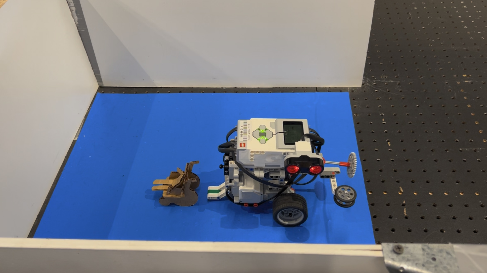
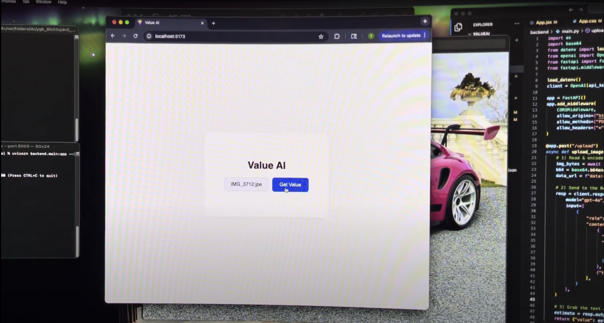

Projects

Autonomous Robot Navigation SystemThis robot was designed to pick up a target (such as a disabled person in the video demonstration) at a given color coded space and navigate through a maze, without outside intervention, to reach another destination (also color coded) and drop of the target at said location. Technologies used to were a touch sensor, an ultra sonic sensor, and a color sensor. All coding was done in MATLAB.
Algorithmic trading bot created using python and pandas library. The model (which is always changing to try and make it better) uses a RSI risk strategy that determines when a given security is "oversold," then takes profit when the profit reaches 7.5% or sells the position for a loss if the position reaches -2.5% threshold. The development of this model includes a backtesting engine I engineered using Binance API to validate the viablity of the model.

Car Market-Value EstimatorThis app (value AI) allows users to upload an image of a vehicle and find out an estimated market value of that car. Value AI turns anyones camera into a car-valuation tool. It is a full-stack web app based on Python and React+Vite using FastAPI and Open AI GPT-4o vision API to identify make, model, and year to return up to the minute USD estimates.